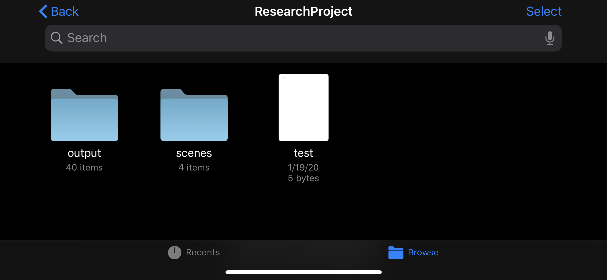
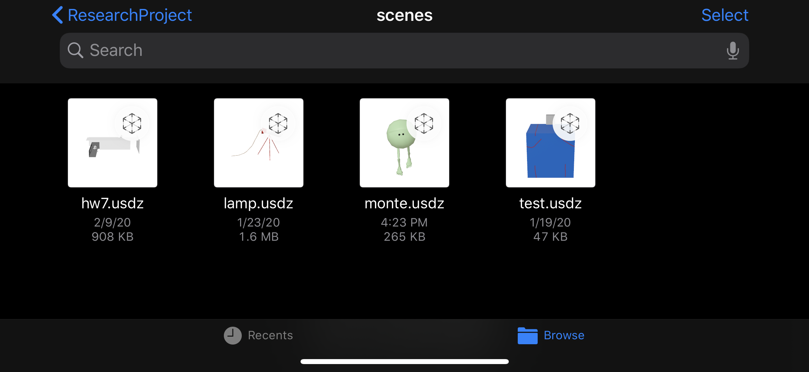
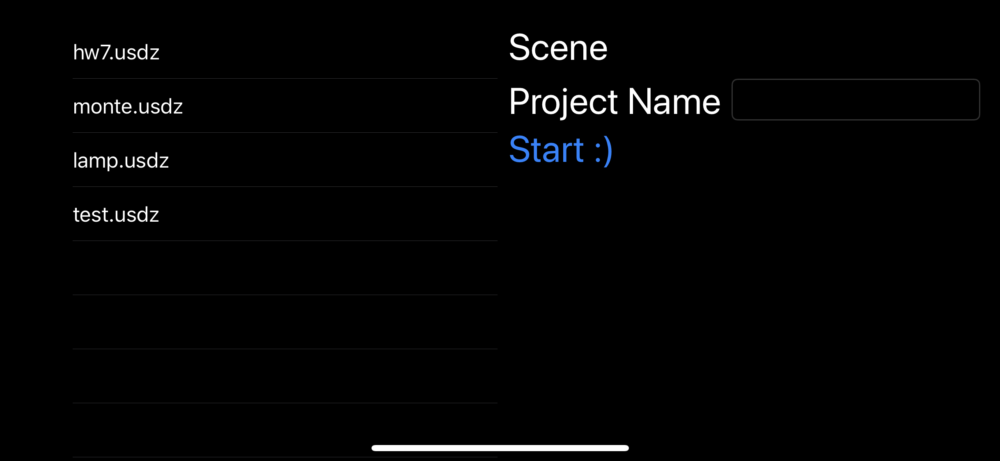
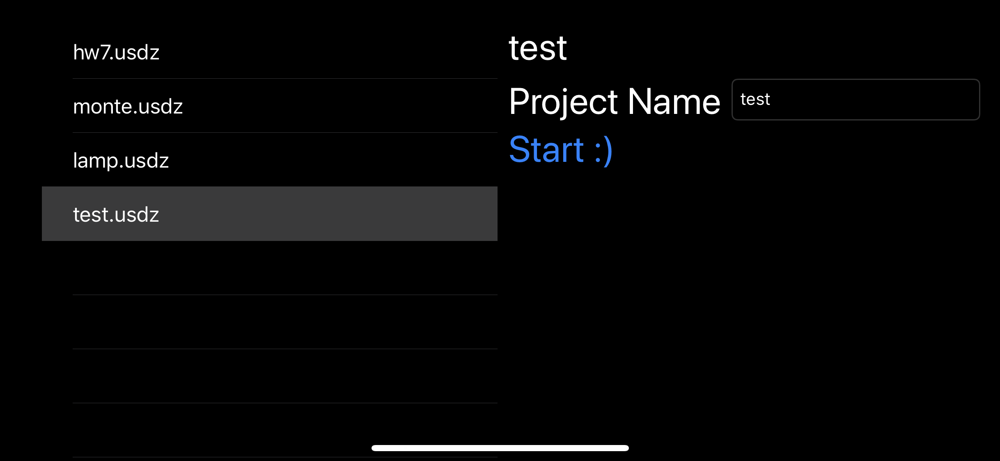
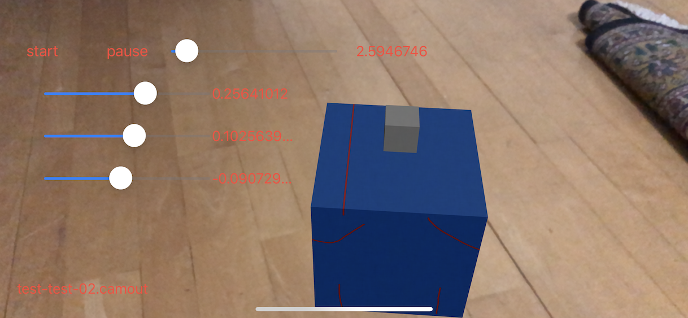
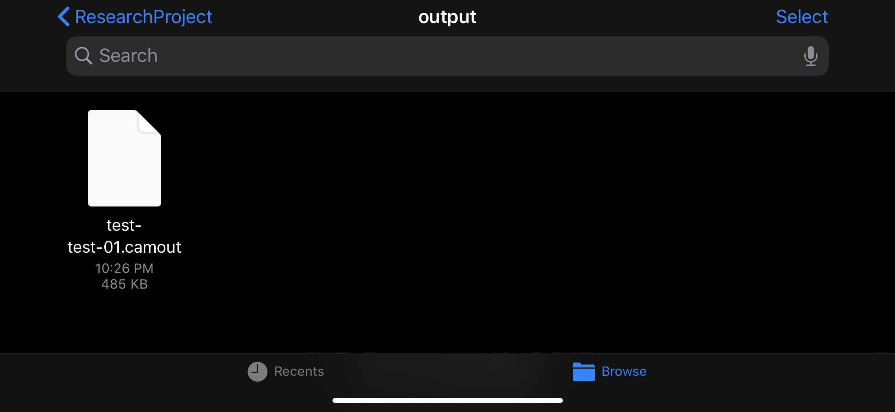

AR Camera Layout Tool
This tool allows layout artists to create camera shots using augmented reality. A scene is modeled and animated in Maya, then imported into an app which displays the scene in AR. Next, the user moves around the AR scene while the app records the position and rotation of the AR camera. Finally, the camera position data is exported from the app and imported into a Maya plugin, which generates keyframes on a Maya camera.
The App
The app runs on iOS and utilizes RealityKit and ARKit. First, users should create a model (with optional animation and textures) and generate a USDZ file from the model. USDZ files can be generated from an FBX file using Apple's usdzconvert command line tool. One a user has a USDZ file, it should be placed in the iOS app's file directory using the Files app. The 'scenes' folder contains all the USDZ that the app can load, and the 'output' folder will contain any data generated by the app.
-


After users put USDZ files in the scenes folder, the files will appear in the AR app. Users can select a scene to display, and then specify a project name to organize the output files. The project name will be part of the output file name.
-


Once the app is displaying the scene in AR, users can adjust the scale and position of the scene if nessesary. The file name of the outputted data is displayed in the bottom left of the screen. The scene below is a screenshot of 'test.usdz' with project name 'test' and shot '02'. Shot numbers are automatically generated by the app starting at 1.
-

When the user presses the start button, the scene will begin any animation and the app will begin to record the camera's position and rotation. Once the stop button is pressed, the app starts recording, saves the data to the specified file name, and returns to the selection screen. Data is saved to a .camout file, which contains the data from the AR camera recording. It is accessible in the Files app.
-

The Plugin
The Maya plugin is written in Python and utilizes PyMEL and PySide. After camera data has been generated by the app, it is copied from the Files app to a computer running Maya.
From the plugin's GUI, a .camout file is selected and imported. Next, users select a Maya camera to bake the AR camera data on to. Then, keyframes are generated based on the AR camera data.
Discussion and Limitations
The camera data recorded by the app closely matches the generated keyframes in Maya. However, due to differences in aspect ratio and focal length of the AR and Maya cameras, the framing of the scene between the two cameras will differ. This is a limitation that is difficult to fix, since AR cameras have a fixed focal length, while Maya cameras can have multiple focal lengths. Additionally, AR camera position tracking is very jittery, which is not ideal for animation. Camera position data can be filtered to reduce jitter, or jittery keyframes can be manually adjusted.